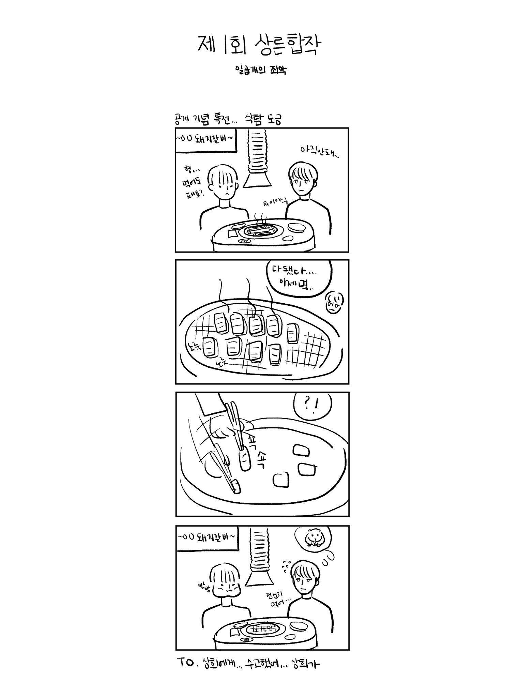

미미
안녕하세요, 색욕으로 참여한 미미입니다. 처음 구상했던 내용과는 많이 달라져서 마무리하면서도 걱정이 많이 됐는데 재밌게 읽으셨는지 모르겠습니다. 여담이지만 제목처럼 병원에서 이루어지는 상담이라는 식으로 쓰려다가 급선회하게 되었어요. 잘 어울리나요? ㅎㅎ 주제에 집중이 됐으면 하는 바람으로 은상 외에는 등장인물의 이름이 나오지 않는데 누구로 생각하시면서 보셨는지 궁금하네요. 제가 생각하면서 쓴 인물들이 있기는 하지만 읽어 주신 분들마다 상상하신 게 각각 다르더라구요. 혹시라도 피드백이나 코멘트 남기시게 된다면 알려 주세요. 감사합니다. ❤
카레
안녕하세요 상른합작에 송상-색욕으로 참여한 카레입니다. 제목부터 설명을 드리자면 LikemeLoveme라는 제가 좋아하는 곡 제목입니다ㅎㅎ! 좋아해줘 사랑해줘 그런 뜻을 가지고 있어요. 송상에 어울리는 것 같아서 붙여봤습니다. 내용은 기독교인 송상이들이 성경에서 죄악으로 여겨지는 동성간 사랑을 나누는 내용입니다. 진지한 만화를 위해 노력 했지만 주제와 멀어진 것 같아서 ㅜㅜ 그래도 열심히 작업 했으니 재밌게 봐주세요^-^♡ 상른 합작을 열어주신 총대님 그리고 참여진분들 너무너무 수고하셨습니다. 상른최고 상른합작최고 상른만이 희망이다 감사합니다 ♡!♡
하림
몇 년 만에 글을 쓰네요. 언제나 불친절한 글을 쓰게 됩니다. 은상이와 형준이의 심연이 효과적으로 발현됐는지 모르겠어요. 어떤 사물들은 있는 그대로 독자 여러분에게 닿았길 바랍니다. 퇴고 과정에서 함께해 주시고 조언해 주신 미미 님, 못 님, 모순 님께 감사드립니다. ♥︎ 함께 밤새우며 글 쓴 친구들과 멋진 합작 잘 마무리해 주신 총대 상희 님께도 감사드리고 고생 많으셨습니다.
상사
안녕하세요. 상른 합작 죄악 중 ‘분노’ 로 참여하게 된 상사입니다. 이 글을 마지막 문장까지 읽어주신 모든 분들에게 감사의 인사 전해 드립니다. 처음 상른 합작을 발견하고 참여를 해야 할지 말아야 할지 큰 고민이 있었습니다. 한참이나 고민을 하다가 떠오르는 소재로 뒤늦게 분노 죄악으로 참여를 하게 됐습니다.
꽃처럼 피어난 정모 도련님의 총애를 받고 자라나는 은상이의 분노로 인해 생겨난 재앙을 써내리면서 담고 싶은 것이 많은 탓에 줄이는 것이 어려웠습니다. 자신으로 인해 퍼석한 얼굴에 뜨거운 감정을 피어 올리는 은상이를 보며 느끼는 정모의 감정들도 써보고 싶었지만 단편이니 만큼 열심히 추렸답니다. 덕분에 갑작스러운 전개가 있었을 텐데 그럼에도 마지막까지 정독해주신 분들께 감사하다는 말씀드리고 싶습니다. 이번 기회로 총대님 덕분에 다양한 분들과 함께 합작도 하게 되고, 홈페이지에 글도 올려보며 저 스스로도 참여에 의미를 같게 된 것 같아서 기뻤습니다. 이번 합작으로 많은 고생해주신 총대님에게도 감사의 말씀 전합니다~👍🏻 마지막으로 다른 작가님들의 글과 그림도 관심 있게 봐주세요. 상른 대메이저 화이팅❤️
메코챠
원래 제목이었던 ＜이상한 문장에 밑줄을 긋고＞는 제목 제출 당일에야 허버허버 지었답니다. 저는 제목을 짓고 그 제목에 맞춰서 스토리를 구상하거든요.
제목이 끌리지 않으면 안 읽는 제 성격 탓입니다. (결국엔 제목을 ＜텐코멘＞으로 변경했답니다.)
그래서 이 제목을 짓고 스토리를 대충 생각해 뒀던 게 있습니다. 과외 선생님인 승연이의 형과 제자인 은상이 그리고 형을 별로 안 좋아하는 승연이.
은상이 승연이의 형을 좋아하는 것을 우연히 알게 된 승연이 약점으로 잡고 놀리며 은상과 어울리고 형을 질투하는 내용이었어요.
은상이는 국어를 제일 못하고 오히려 수학 성적이 제일 좋지만 국어를 너무 좋아해서 문과로 간 케이스였다는 그런... 설정이 있었습니다.
근데 질투라는 걸 어떻게 풀어내야 할지 감이 안 와서...... 며칠을 내리 고민했지만 결국 답이 안 나와서 싹 다 갈아엎었습니다. 결국 지금 스토리도 은상과 승연 둘 중 하나가 질투하는 게 아닌 제 3자가 질투하게 되었지만요.
제 생각엔 둘이 질투랑은 좀 안 어울리는 것 같아서 타인에게 넘겨줘버렸네여. (ㅋㅋㅋ)
뭔가 감성적인 문학소년 은상이 느낌이었어요. 책을 읽으면서 좋아하는 문장에 밑줄 긋는 은상이. 사랑에 대한 책을 읽다가 이상한 부분에 밑줄을 긋는 은상이가 떠올랐습니다!
결국엔 연애하면서 그 문장이 틀린 말은 아니었구나~ 이제 좀 이해하겠다 싶은 은상이를 생각했는데 역시나 풀어내는 게 너무 지루하더라고요. 결국 써낸 스토리는 달리는 차안에서 막힘없이 쓴 겁니다!
역시 글은 술술 써지는 게 최고인 것 같아요. 이번 합작 참여하면서 고생해 주신 총대 상희 님에게 제일 큰 감사를 드리고 싶습니다. 진짜 너무 고생하셨어요. 책임감 있게 진행해 주셔서 저도 편하게 작업했습니다. (--)(__)
말이 계속 길어지네요. 여기서 이만 줄이겠습니다. 긴 글 읽어 주시느라 고생 많으셨어요. 감사해요! 상른이 최고다!
어?존나맛있네
포타... 그러니까 글을 쓰는 것 자체가 처음이라서 쓰다가 길을 잃을 때도 많았고 고민도 엄청 많았는데 정말 상른 합작 넘 하고 싶은 마음이 커서 그 맘 하나로 열심히 썼습니다!! 이거 쓰면서 다른 글도 써 보고 싶다는 마음이 생겼어요 도움 주신 분들 너무 감사해요... 글구 합작 진행해 주신 총대님 너무 고생하셨어요 이런 좋은 기회를 주셔서 감사해요 정말... 너무 감사해요!!
못
안녕하세요, 못입니다. 일단 상른 합작 열어주신 주최자님께 인사드리고 싶습니다. 중간중간 탈도 많았지만(...) 책임감으로 끝까지 이끌어 주셔서 감사합니다.
탐욕으로 참가하였는데 글에 있듯이 전 탐욕의 끝은 파멸이라고 생각했습니다. 형준이의 하나에게 향하는, 곧 은상이에게 향하는 탐욕이 커질수록 잃는 것도 많고 커진다는 점에 집중해주셨으면 합니다. 탐욕 과정을 하나하나 설명하기엔 후기가 길어질 것 같고, 개그를 설명하면 재미가 없어지는 것처럼 글도 설명하면 재미 없어질 것 같아서.. 이쯤에서 마무리하겠습니다.
피드백 해주시고 독려해주신 합작 참가 작가님들 그리고 제 글 읽어주시고 피드백 해주시는 독자님들 감사합니다!!
행
안녕하세요 행입니다! 이번에 상른 합작에 참여하게 돼서 기뻐요. 다른 작가님들 작품도 많이 볼 수 있을 것 같아서 너무 기대되네요. 처음 참여해보는 합작이어서 많이 미숙하기도 했지만 상른 합작을 할 수 있어서 즐거웠습니다.
저도 어쩌다가 20p를 그리게 되었는지 아리송한데요. 조긍을 질투로 어떻게 풀어낼지 생각해보다가 이전부터 생각해왔던 소재와 합치면 주제와 맞을 듯해서 겨우 완성했습니다. 중간에 파일 저장을 잘못하는 해프닝도 있었지만 어찌저찌 완성해서 다행이라는 생각이 듭니다.
원래 이야기는 읽으시는 분들 상상에 맡겨야 한다 생각해서 언급안 하고 싶지만, 작중 승연이.. 나쁘게 보일 수도 있지만 나쁜 놈은 아니랍니다ㅜ
제가 힘이 된다면 승연이 시점에서도 그리고 싶네요.
문장 검수해주신 은꾸님께 감사드리고,
고생해주신 총대님과 다른 작가님들도 감사드려요!
후기 이렇게 쓰는 거 맞나요..? 여러분 조긍하세요^^
파인샷
‘저는 형과 평생을 살아도 좋다고 생각했어요.’
안녕하세요. 파인샷입니다. 위에 있는 문장은 죽어가는 도중에도 승연을 보며 생각한 은상이의 한마디입니다.... 첫 상른 합작으로 찾아뵙게 되어 너무 기쁜 마음입니다. 여러분들께 제 글이 긍정적으로 다가갔을지 걱정도 되고 그만큼 기대도 큽니다. 감정선에 포커스를 두고 쓴 글이니 읽으시는 분들도 감정선에 집중해서 읽어 주셨으면 하는 바람이 있네요. 캐릭터 설명을 조금 해 보자면, 제 글에서 조승연은 사랑에 눈이 멀어 자신의 욕망까지 버리기보다는 욕망과 사랑 두 마리의 토끼를 잡고 싶은 인물입니다. 그래서 자신이 원하는 욕구가 다 채워지는 순간 은상을 어떻게든 잡아야겠다는 마음뿐이었고, 자신을 위해 희생된 은상을 잡을 방법은 똑같은 길을 걷는 것뿐이었습니다. 이은상은 희망 없이 태어나 살아온 인물입니다. 최소 욕구만 충족시키며 살아온 은상에게 승연은 처음으로 돌아갈 집을 만들어 준 존재입니다. 그게 은상에게는 너무 소중해서 시간이 지날수록 집 그 자체가 승연으로 변한 것이죠. 소중한 사람에게 배신당한 은상이의 마음을 상상해 보셨으면 좋겠네요. 그리고 모브 캐릭터였던 구정모는.... 그렇게 써서 죄송합니다. 이번에는 두 인물에만 집중하고 싶었어요. 삽입된 BGM은 승연이 은상에게 자장가처럼 불러 주던 곡입니다. 사실 인트로만 들으면 됩니다. 승연이가 I know you so well, so well 이 부분을 I love you so much, so much로 개사한 건데요.... 여러분도 이 글을 읽으실 때는 이렇게 자동으로 개사해서 들으셨으면 좋겠네요. 긴 후기 읽어 주셔서 감사합니다. 그리고 이 합작을 이끌어 주신 총대 님께도 정말 수고하셨고 감사하다는 말을 전하고 싶네요. 좋은 하루 되시길 바랍니다.
재
제대로 된 글을 끝까지 완성해 보는 건 처음이라 많이 떨리네요... (흑흑) 글을 완성하고 나서 나태라는 주제가 분명하게 드러나지 않은 것이 제일 아쉬운 것 같아요. 아무리 읽어봐도 마지막에 억지로 끼워넣은 느낌이 강해서... 그래도 모쪼록 잘 마무리한 것 같습니다. 총대님을 포함한 합작 참여진 분들 모두 수고하셨어요. 특히 총대님 정말 수고하셨습니다. 다음 합작이 열린다면 그때도 참여하고 싶어요 감사합니다. 다시 한 번 모두 수고하셨어요!
24
안녕하세요, 주제 식탐으로 참여하게 된 24입니다. 사실 커플링을 삼각으로 설정해 두 명이 이어지기엔 장편이 될 것 같아서 결말을 어떻게 내야 할지 3시간 동안 머리 싸매고 정말 고민을 많이 했어요. 결국 열린 결말로 끝을 맺었는데 독자분들이 읽으시기에는 어떨지... 등장인물이 서로에게 느끼는 감정에 집중해 읽어주시면 더 좋을 것 같아요. 그리고 한 달 남짓한 시간 동안 제일 많이 고생해주신 총대님 너무너무 감사합니다. 중간에 많은 일들이 있었지만(ㅠㅠ) 존잘님들과 함께 합작에 참여하고 이렇게 마무리를 짓게 되어 기뻐요♡♡ 다시 한 번 합작 열어주신 총대님께 감사하고 제 글을 포함한 모든 작품들 다 재밌게 즐겨주세요＞＜
골든
함께하신 모든 분들 정말 수고 많으셨습니다 특히 상희님 정말 고생 많으셨어요. 이번 글은 아쉬운 점이 많아 또 따로 풀어낼 것 같습니다. 탁하고 차분한 속의 승연이와 은상이 너무 아꼈고... 그래서 더 미련이 많이 남네요. 길다면 길고 짧다면 짧은 글 읽어주셔서 감사합니다!
이름
우선 총대님, 합작 기획부터 시작해서 전반적인 관리까지 책임과 애정 갖고 이끌어 주셔서 감사합니다. 여러 사람과 같이 주제를 통일해서 글을 쓰는 건 참 재미있는 것 같아요. 평소라면 머릿속에 떠올라도 생각만 하는 것에서 그쳤을 텐데 합작이라는 명분으로나마 쓸 수 있게 되는 것도 좋고요. 합작이 공개되고 다른 분들의 글을 읽는 것도 참 설레요. 여러분들과 같이 제 글이 게시되는 걸 영광이라고 생각하고, 제 글을 읽어 주실 분들께 감사하다는 말 전하고 싶어요. 감사합니다.
상희
안녕하세요... 첫 상른 합작의 총대를 매게 된 상희입니다... 트친분들이랑 농담 식으로 칠죄악으로 합작을 하고 싶다고 얘기 나누다가 정말 이렇게 하게 될 줄은... 몰랐네요 제가 왜 그랬는지...(?) 한 달이 넘는 기간 동안 우여곡절도 많았고 합작 총대라는 걸 처음... 그것도 전부 혼자서 도맡다 보니 솔직히 말하면 그만두고 싶었던 적이 한두 번이 아니었지만... 옆에 계신 좋은 분들 덕분에 이렇게 어떻게든 마무리가 된 것 같아요. 이름 한 분 한 분 불러 드리고 싶은 마음이 굴뚝 같네요... 정말 감사드립니다. 몇 명 불러 보자면 처음 시작할 때 큰 도움 주셨던 하림 님, 합작 준비하면서 몇몇 책임감 없는 분들 저 대신 혼내 주셨던 오사 님, 웹사이트 제작 도와주신 휴 님, 제 자존감 지킴이 해 주신 못 님, 이 외에도 곁에서 좋은 말씀 많이 해주신 분들께 진심으로 감사하다고 말하고 싶어요. 그리고 중간에 안 나가고 마감까지 달려주신 우리 작가님들 너무너무 수고하셨어요!! 즐거운 감상 되셨으면 좋겠어요. 작가님들께 드리는 피드백은 큰 원동력이 됩니다. 마지막으로 합작 공개를 축하하며 작은 축전을 준비했어요. 재미있게 봐주세요! 좋은 하루 되시길 바랍니다. 상른 떡상해 ＞.＜
